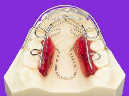

Aparotologia:Cuando los niños son más pequeños, todos sus huesos están a medio formar y por lo tanto, muchas veces se detecta que los maxilares están colocados en una mala posición, y por lo tanto, su mordida es incorrecta. Los aparatos removibles consiguen subsanar este defecto. Muchos niños sólo necesitan de un aparato removible porque al corregir sus maxilares, se colocan automáticamente los dientes en una posición correcta. Sin embargo, hay otros pacientes que necesitan dos fases, y algunos, sólo los aparatos fijos (sobre todo cuando los niños son más mayores, cerca de la adolescencia).
